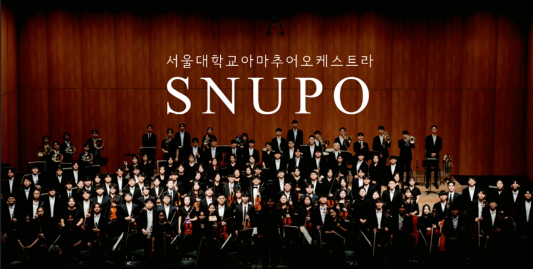
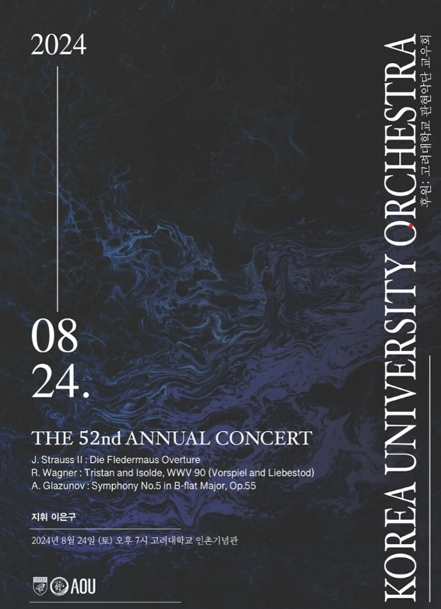
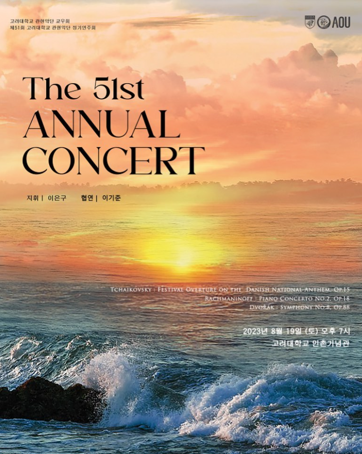
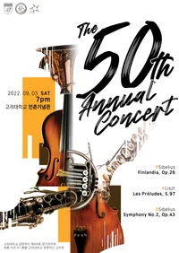

“서로 다른 소리로 하나 된 음악을 만드는 동아리"
서울대학교 아마추어 오케스트라 SNUPO는 1992년 창단되어
전공을 불문하고 클래식 음악을 사랑하는 학생들이 모여 진지한 연주 활동을 펼치는 중앙동아리입니다.
매년 정기 연주회와 실내악 앙상블을 비롯해 다양한 특별 공연과 행사에 참여하며 음악의 감동을 널리 전하고 있습니다.
초보자부터 숙련자까지 모두가 함께 연주하며 서로를 배우고 조화로운 음악을 만들어갑니다.
클래식을 대중적인 문화로 자리 잡게 하고자 노력하며,
“서로 다른 소리로 하나 된 음악을 만든다”는 모토 아래 음악의 즐거움을 나누고 있습니다.


“서로 다른 소리로 하나 된 음악을 만드는 동아리"
서울대학교 아마추어 오케스트라 SNUPO는 1992년 창단되어
전공을 불문하고 클래식 음악을 사랑하는 학생들이 모여 진지한 연주 활동을 펼치는 중앙동아리입니다.
매년 정기 연주회와 실내악 앙상블을 비롯해 다양한 특별 공연과 행사에 참여하며 음악의 감동을 널리 전하고 있습니다.
초보자부터 숙련자까지 모두가 함께 연주하며 서로를 배우고 조화로운 음악을 만들어갑니다.
클래식을 대중적인 문화로 자리 잡게 하고자 노력하며,
“서로 다른 소리로 하나 된 음악을 만든다”는 모토 아래 음악의 즐거움을 나누고 있습니다.



1992 서울대학교 악우협회 오케스트라 창단
2021 제 57회 정기연주회
2021.09.27 회장 | 박재형 지휘 | 이승혁
2022 제 58 · 59회 정기연주회
2022.03.02 회장 | 박재형 지휘 | 이승혁
2022.09.01 회장 | 박재형 지휘 | 이승혁
2023 제 60 · 61회 정기연주회
2023.03.02 회장 | 장승민 지휘 | 이준호
2023.09.01 회장 | 장승민 지휘 | 이동준
2024 제 62 · 63회 정기연주회
2024.02.29 회장 | 김동민 지휘 | 문민석
2024.08.29 회장 | 김동민 지휘 | 기동현